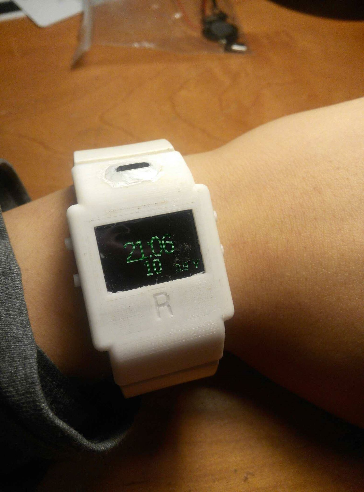
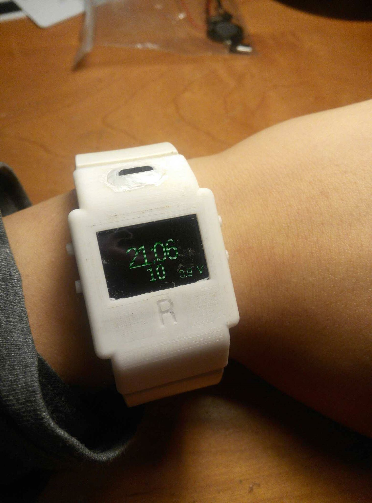

自製手錶
2020-03-09
好久沒放東西了，來把最近做的一些東西PO一下吧！
這個手錶是用Tinyscreen+做的，我另外還加了小喇叭跟外接USB頭。外殼是用Autodesk Inventor 3D列印做出來的，可以不用螺絲就固定在錶帶上，錶帶我從另一種手錶拆下來用。
程式部份有時間、日期、課表、計時器、農曆日期、時辰。


好久沒放東西了，來把最近做的一些東西PO一下吧！
這個手錶是用Tinyscreen+做的，我另外還加了小喇叭跟外接USB頭。外殼是用Autodesk Inventor 3D列印做出來的，可以不用螺絲就固定在錶帶上，錶帶我從另一種手錶拆下來用。
程式部份有時間、日期、課表、計時器、農曆日期、時辰。
